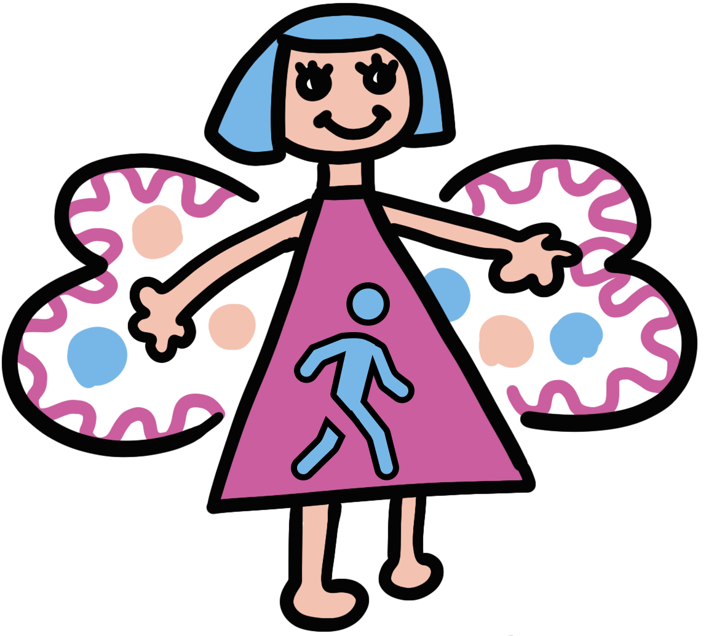

Télécharger IA-QM Clinical
Application de bureau pour gérer les dossiers d'analyse quantifiée de la marche, les bilans de kinésitéhrapie et les indications chirurgicales, orchestrée par RedCap
Dernière version
Choisissez votre installateur
- Windows Windows 10 ou 11, 64 bits Télécharger
- Mac à puce Apple M1, M2, M3, M4 et suivants Télécharger
- Mac à processeur Intel Core i5, i7, i9 et Xeon Télécharger
Quel Mac avez-vous ?
Ouvrez le menu Pomme, en haut à gauche de l'écran, puis choisissez À propos de ce Mac. La première ligne vous indique la version à prendre.
PuceApple M2
Prenez Mac à puce Apple
ProcesseurIntel Core i5
Prenez Mac à processeur Intel

Si l'ouverture est bloquée
Au premier lancement, Windows ou macOS peuvent demander une confirmation avant d'ouvrir l'application.
Windows
- Si le message Windows a protégé votre ordinateur apparaît, cliquez sur Informations complémentaires.
- Cliquez sur Exécuter quand même, puis suivez l'installateur.
macOS
- Ouvrez le fichier .dmg et glissez IA-QM Clinical dans le dossier Applications.
- Lancez IA-QM Clinical une première fois. Si macOS refuse de l'ouvrir, fermez le message.
- Ouvrez Réglages Système, puis Confidentialité et sécurité. En bas de la page, cliquez sur Ouvrir quand même.